pacman::p_load(tidyverse, ggrepel, ggthemes, hrbrthemes, patchwork)Beyond ggplot2 Fundamentals
1. Learning Outcome
In this chapter, we will learn to create more elegant and effective statistical graphics using ggplot2 extensions. By the end of this exercise, we will be able to:
- control the placement of annotation on a graph by using functions provided in ggrepel package
- create professional publication quality figures by using functions provided in ggthemes and hrbrthemes packages
- plot composite figure by combining ggplot2 graphs using pachwork package
2. Getting Started
2.1 Installing and loading the required libraries
In this exercise, other than tidyverse, we’ll learn to use a few new R packages:
- ggrepel: an R package provides geoms for ggplot2 to repel overlapping text labels
- ggthemes: an R package provides some extra themes, geoms, and scales for ggplot2
- hrbrthemes: an R package provides typography-centric themes and theme components for ggplot2
- patchwork: an R package for preparing composite figure created using ggplot2
Now, let’s start the exercise by installing these packages
2.2 Importing the data
We’ll continue to use Exam_data throughout this exercise. To recap, this data set contains year end examination grades of a cohort of primary 3 students from a local school. The data file is in csv format.
Let’s import the data by using read_csv() function of readr package.
exam_data <- read_csv("../../Data/Exam_data.csv")The data set consists of 322 rows, and 7 variables.
- 4 categorical variables: ID, CLASS, GENDER, RACE
- 3 numerical variables: ENGLISH, MATHS, SCIENCE
3. Beyond ggplot2 Annotation: ggrepel
Annotation is a common challenge we face while plotting statistical graphs, especial for the data with large number of data points. For example, let’s take a look at the graph below:
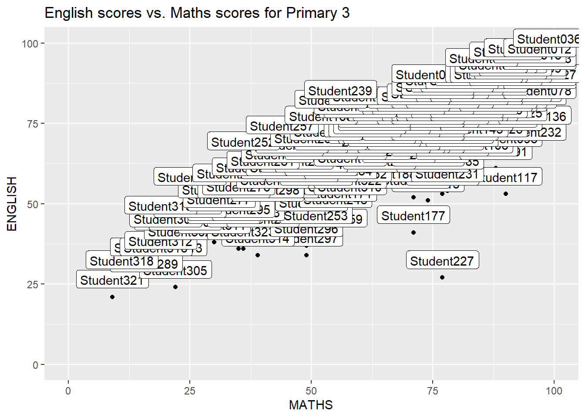
In the plot, we want to label the data points with the student ID so it’s easy for data interpretation. However, the labels are clustered together due to the large number of data points in the graph. The student ID becomes non-identifiable in this case.
With the help of ggrepel package, we are able to repel the overlapping text labels. What we need to do are:
- replace geom_text() with geom_text_repel()
- replace geom_label() with geom_label_repel()
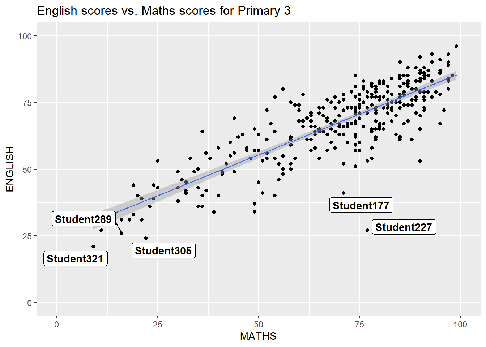
ggplot(data = exam_data,
aes(x = MATHS,
y = ENGLISH)) +
geom_point() +
geom_smooth(method = lm,
size = 0.5) +
geom_label_repel(aes(label = ID),
fontface = "bold") +
coord_cartesian(xlim = c(0, 100),
ylim = c(0,100)) +
ggtitle("English scores vs. Maths scores for Primary 3")4. Beyond ggplot2 Themes
In addition to the data labels, we can also customize the theme of a ggplot. ggplot2 provides 8 built-in themes for us to choose from. The graph below illustrates the 8 built-in themes.
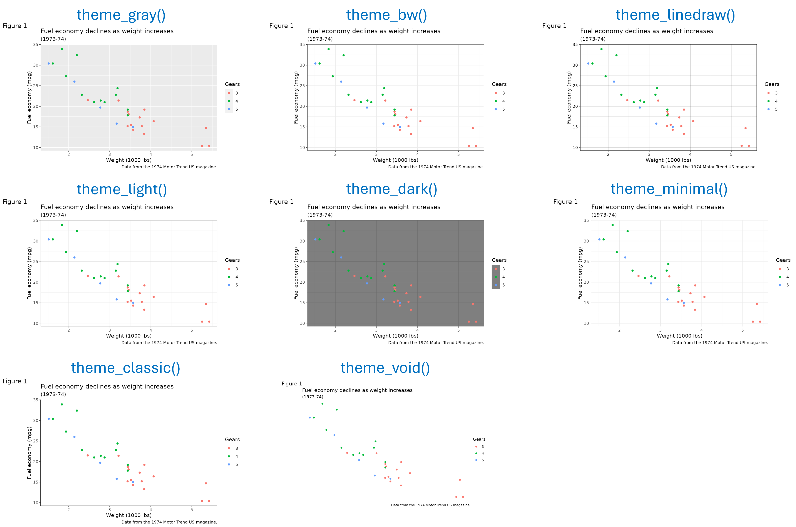
Let’s now plot the histogram of Maths scores with theme_gray().

ggplot(data = exam_data,
aes(x = MATHS)) +
geom_histogram(bins = 20,
boundary = 100,
color = "gray25",
fill = "gray90") +
theme_gray() +
ggtitle("Distribution of Maths scores")4.1 Working with ggtheme package
In addition to the default themes provided in ggplot2, we are also able to choose more themes from ggthemes package.
The graph below shows the examples of the themes available in ggthemes package.
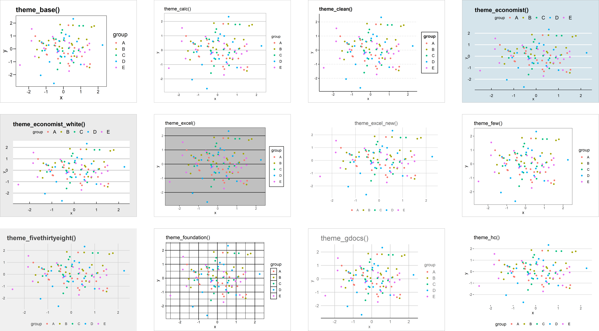
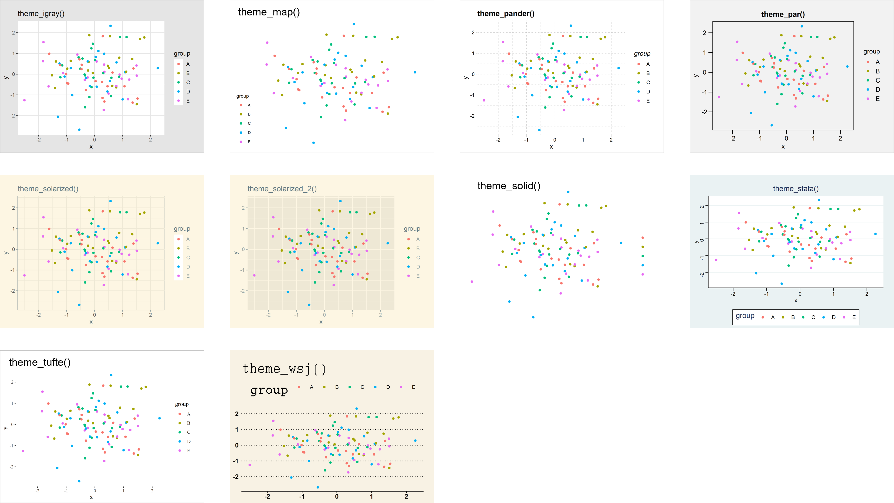
Let’s now plot the histogram of Maths scores using theme_economist().

ggplot(data = exam_data,
aes(x = MATHS)) +
geom_histogram(bins = 20,
boundary = 100,
color = "gray25",
fill = "gray90") +
ggtitle("Distribution of Maths scores") +
theme_economist()4.2 Working with hrbrthemes package
We have learned how to change the themes of the plot in the previous section, hrbrthemes package in R allows us to make further customization in the plots.
More themes:
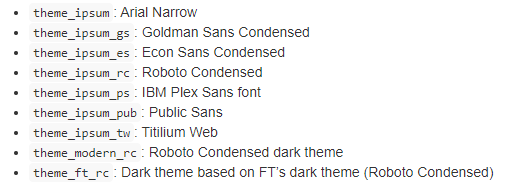
Scales (that align with various themes):
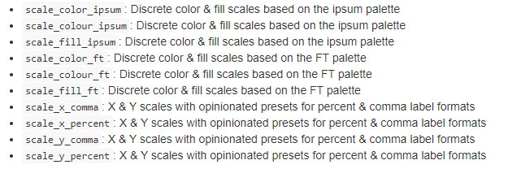
Palettes/Named Colors:
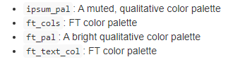
Fonts:
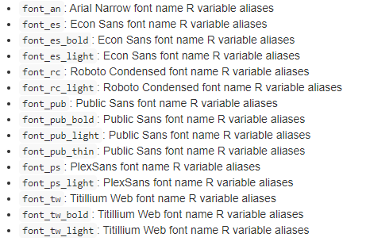
More information of each function can be found in this link.
Next let’s plot the histogram of Maths scores using theme_ipsum().

ggplot(data = exam_data,
aes(x = MATHS)) +
geom_histogram(bins = 20,
boundary = 100,
color = "gray25",
fill = "gray90") +
ggtitle("Distribution of Maths scores") +
theme_ipsum()hrbrthemes package also allows us to edit other aspects of the plot to make it more visually appealing. For example,
- axis_title_size: an argument to change the font size of the axis title
- base_size: an argument to font size of the axis label
- grid: an argument to turn on X/Y gridlines

ggplot(data = exam_data,
aes(x = MATHS)) +
geom_histogram(bins = 20,
boundary = 100,
color = "gray25",
fill = "gray90") +
ggtitle("Distribution of Maths scores") +
theme_ipsum(axis_title_size = 18,
base_size = 15,
grid = "Y")5. Beyond Single Graph
We have learned how to plot single graph using ggplot2, but we sometimes need to arrange the graphs in a way to tell a more complete story. For example, it’s easier to make comparisons between two graphs if they are arranged side-by-side.
Fortunately, there are a few ggplot2 extensions that can help us acheive this.
To do that, let’s first create the individual graphs and assign them to a variable. Then we will use the ggplot2 extensions to compose them in different ways.
Graph1: let’s plot the histogram of Maths scores, and assign it to a variable called P1.
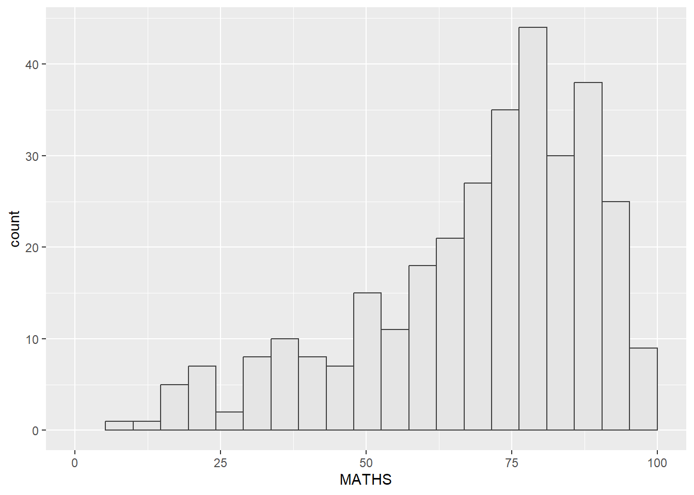
P1 <- ggplot(data = exam_data,
aes(x = MATHS)) +
geom_histogram(bins = 20,
boundary = 100,
color = "gray25",
fill = "gray90") +
coord_cartesian(xlim = c(0, 100))
ggtitle("Distribution of Maths scores")Graph2: let’s plot the histogram of English scores, and assign it to a variable called P2.
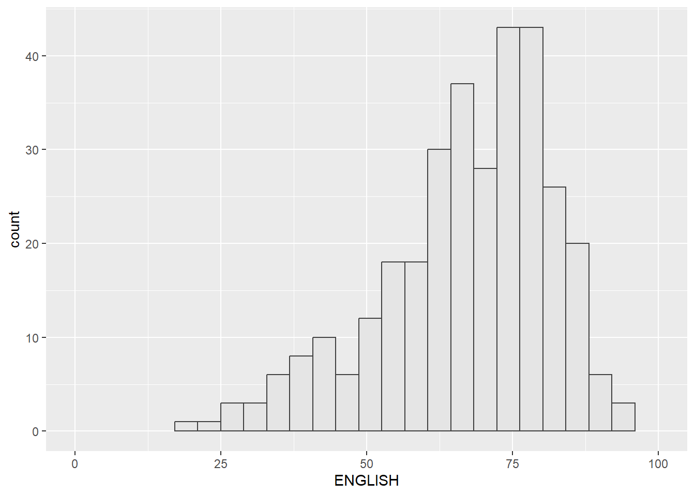
P2 <- ggplot(data = exam_data,
aes(x = ENGLISH)) +
geom_histogram(bins = 20,
boundary = 100,
color = "gray25",
fill = "gray90") +
coord_cartesian(xlim = c(0, 100))
ggtitle("Distribution of English scores")Graph3: let’s plot a scatterplot for English scores vs. Maths scores, and assign it to a variable called P3.

P3 <- ggplot(data = exam_data,
aes(x = MATHS,
y = ENGLISH)) +
geom_point() +
geom_smooth(method = lm,
size = 0.5) +
coord_cartesian(xlim = c(0, 100),
ylim = c(0, 100))
ggtitle("English scores vs. Maths scores for Primary 3")5.1 Creating Composite Graphics: pathwork methods
There are 3 popular functions enable the users to create composite figures by combining several graphs:
- grid.arrange() from gridExtra package
- plot_grid() from cowplot package
- patchwork: specially designed for combining separate ggplot2 graphs into a single figure
In this exercise, we’ll focus on patchwork package. The syntax is rather simple to deploy:
- Use “+” to arrange the graphs in two columns
- Use “()” to create a subplot group
- Use “/” to arrange the graphs in two rows
- Use “|” to stack two ggplot2 graphs
Let’s now take a look at some examples.
5.2 Combining two ggplot2 graphs
Let’s now arrange the two histograms (P1 & P2) we created earlier in two columns
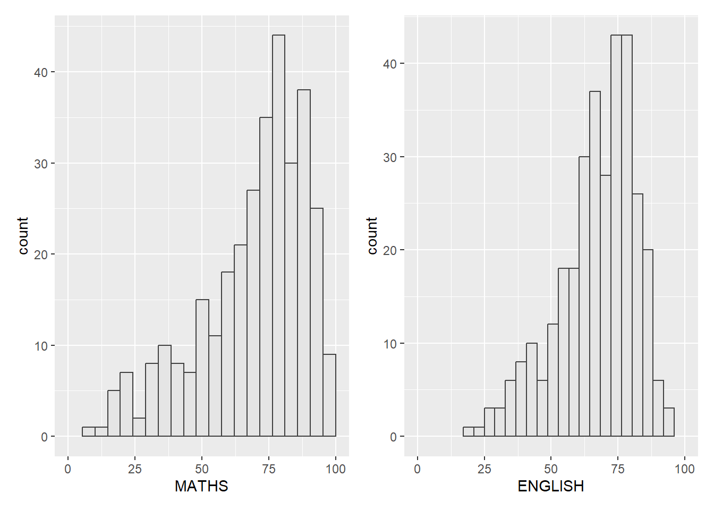
P1 + P25.3 Combining three ggplot2 graphs
Let’s now arrange the two histograms (P1 & P2) in two rows, and put the scatterplot (P3) to the right of them.
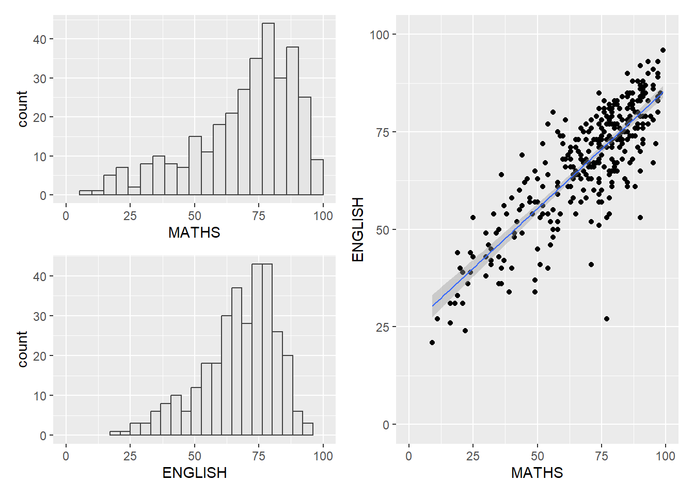
(P1 / P2) | P35.4 Creating a composite figure with tag
We can also tag the graphs using the auto-tagging capability in patchwork.
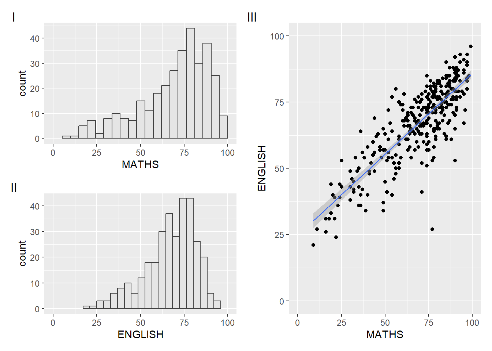
((P1 / P2) | P3) +
plot_annotation(tag_levels = "I")5.5 Creating figure with insert
patchwork also allows us to put the plots next to each other based on the provided layout using inset_element() function.
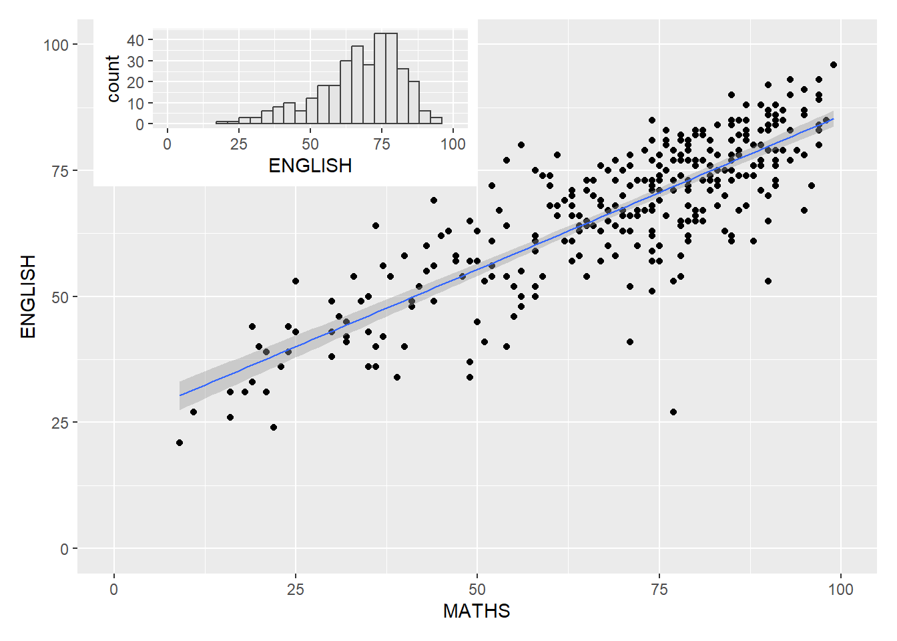
P3 + inset_element(P2,
left = 0.02,
bottom = 0.7,
right = 0.5,
top = 1)5.6 Creating a composite figure by using patchwork and ggtheme
Lastly, let’s integrate patchwork package with ggthemes package to create the following graph.
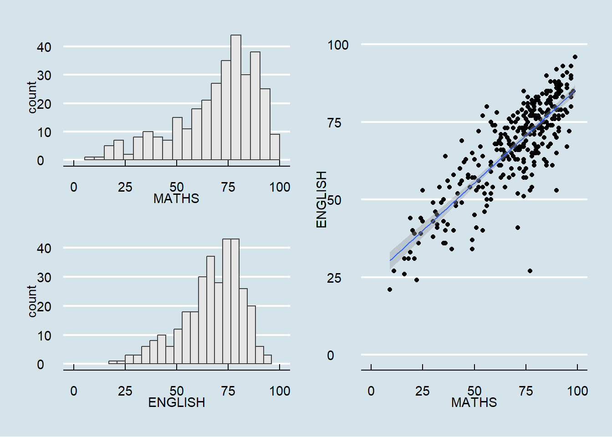
patchwork <- (P1 / P2) | P3
patchwork & theme_economist()This comes to the end of this hands-on exercise. I have learned many different methods to customize the plots. Hope you enjoyed it, too!
See you in the next hands-on exercise 🥰